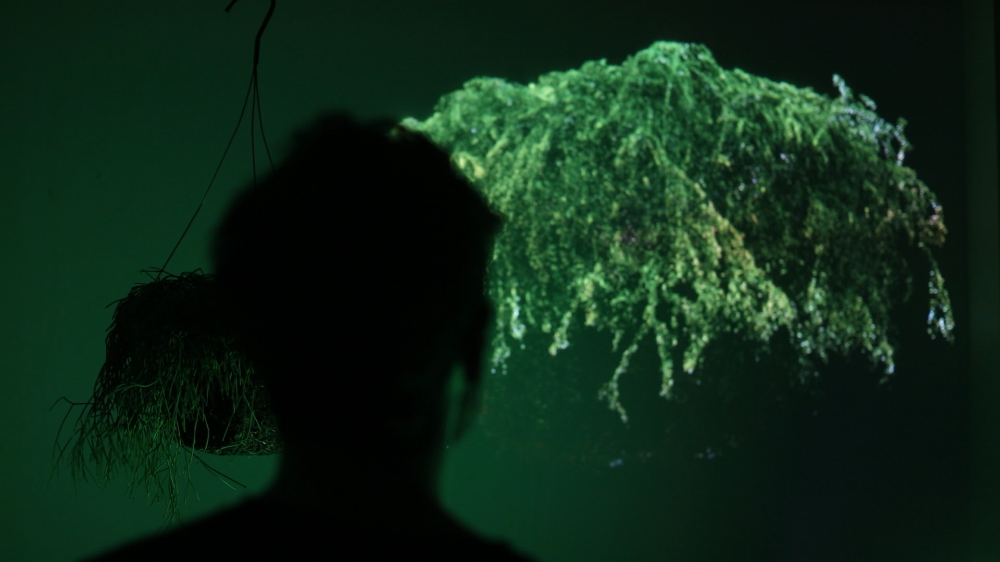
NEW YORK. US
(2022)
STILL, LIFE
STILL– LIFE is an interactive video installation that examines the networked relationships between humans, plants, and technology. Through a physical garden, visitors are encouraged to meditate using touch to explore the affects/effects of transmission between the organic and the digital.
Our mystical relationship with the natural world has attempted every possible way to capture its sublime beauty. It is through representation that we as humans can preserve and capture our reality, and by virtualizing it we give it a new presence. It is undeniable that the digital era has transformed our relationship with nature, now mediated by technology. STILL, LIFE explores this paradoxical relationship, presenting speculative approaches to connection and coexistence.
Thesis instructors: Federico Muelas and Anney Bonney
Thesis advisor: Javier Cruz
Our mystical relationship with the natural world has attempted every possible way to capture its sublime beauty. It is through representation that we as humans can preserve and capture our reality, and by virtualizing it we give it a new presence. It is undeniable that the digital era has transformed our relationship with nature, now mediated by technology. STILL, LIFE explores this paradoxical relationship, presenting speculative approaches to connection and coexistence.
Thesis instructors: Federico Muelas and Anney Bonney
Thesis advisor: Javier Cruz
MFA COMPUTER ARTS THESIS / MUSIC: TOMÁS GARCÍA
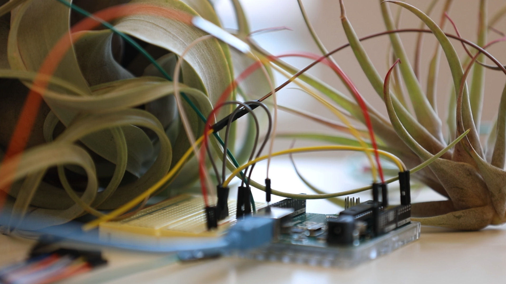
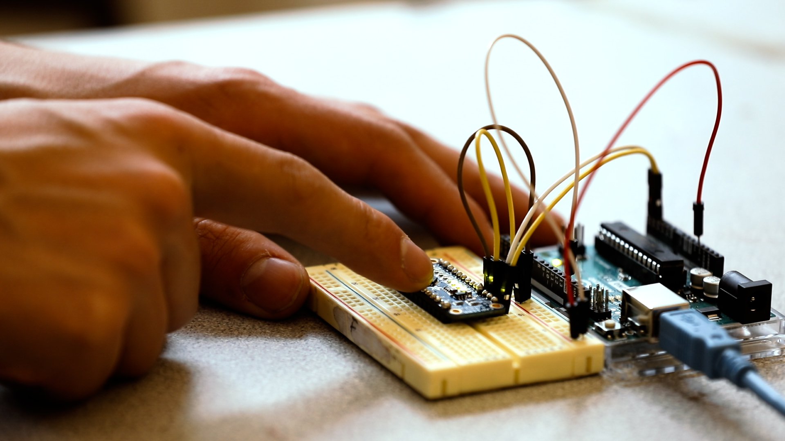
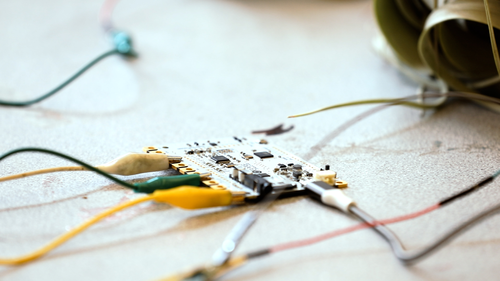
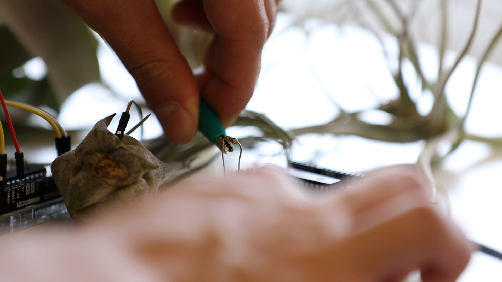
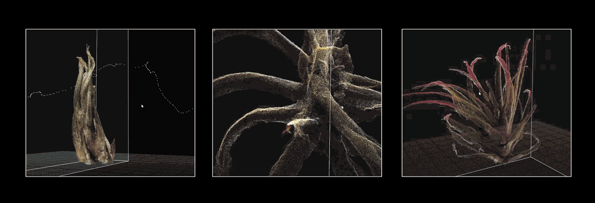
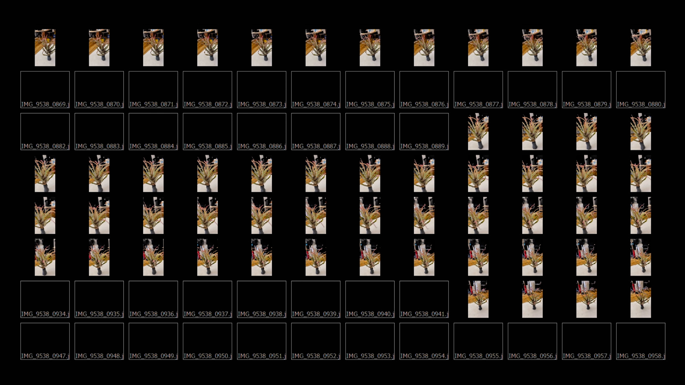
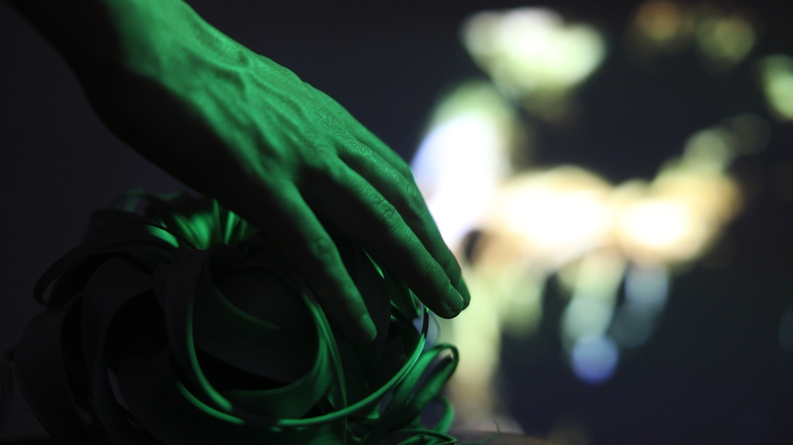
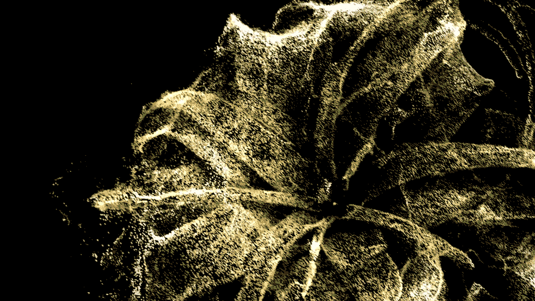
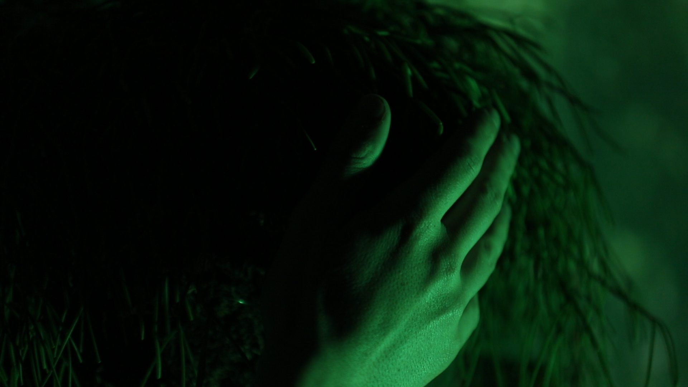
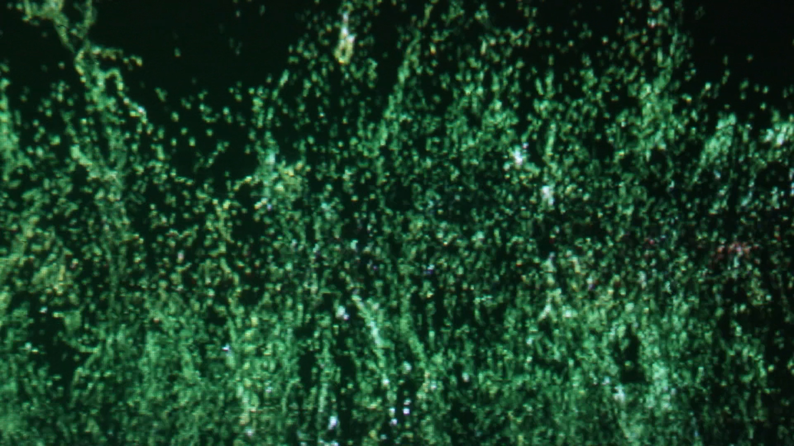